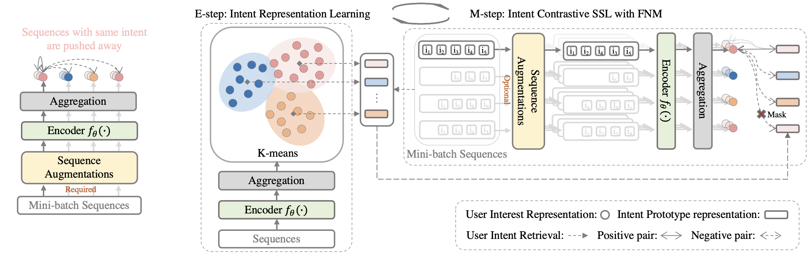
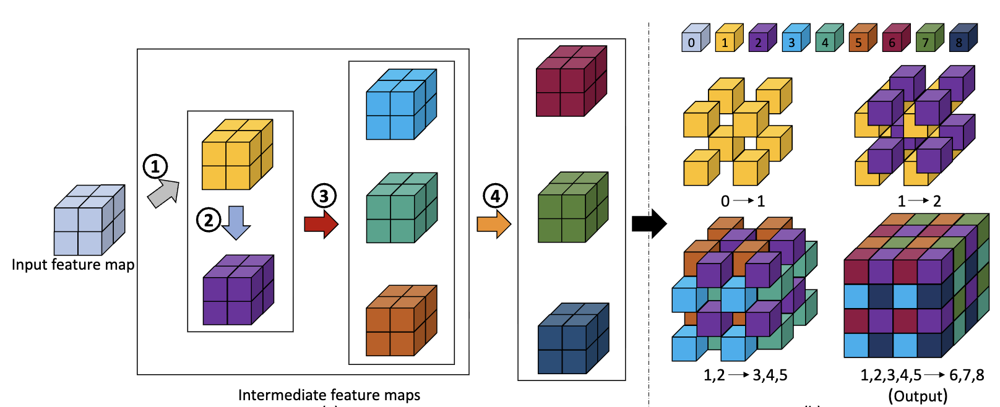
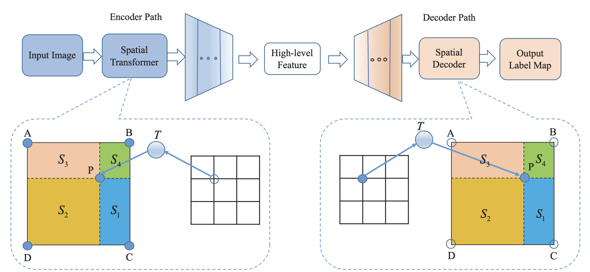

Intent Contrastive Learning for Sequential Recommendation, WWW@2022
Yongjun Chen, Zhiwei Liu, Jia Li, Julian McAuley, Caiming Xiong
Users’ interactions with items are driven by various intents (e.g., preparing for holiday gifts, shopping for fishing equipment, etc.). However, users’ underlying intents are often unobserved/latent,making it challenging to leverage such a latent intent factor for Sequential recommendation(SR). To investigate the benefits of latent intent and leverage it effectively for recommendation, we proposeIntentContrastiveLearning(ICL), a general learning paradigm that leverages a latent intent variable into SR. The core idea is to learn users’ intent distribution functions from unlabeled user behavior sequences and optimize SR models with contrastive self-supervised learning (SSL) by considering the learnt intents to improve recommendation. Specifically, we introduce a latent variable to represent users’ intents and learn the distribution function of the latent variable via clustering. We propose to leverage the learnt intents intoSR models via contrastive SSL, which maximizes the agreement between a view of sequence and its corresponding intent. The training is alternated between intent representation learning and the SR model optimization steps within the generalized expectation-maximization (EM) framework. Fusing user intent information intoSR also improves model robustness. Experiments conducted on four real-world datasets demonstrate the superiority of the proposed learning paradigm, which improves performance, and robustness against data sparsity and noisy interaction issues. Case studies onSports and Yelp further verify the effectiveness of ICL.

Voxel Deconvolutional Networks for 3D Image Labeling, 2018@KDD
Yongjun Chen, Hongyang Gao, Lei Cai, Min Shi, Dinggang Shen and Shuiwang Ji
Deep learning methods have shown great success in pixel-wise
prediction tasks. One of the most popular methods employs an
encoder-decoder network in which deconvolutional layers are used
for up-sampling feature maps. However, a key limitation of the
deconvolutional layer is that it suffers from the checkerboard artifact
problem, which harms the prediction accuracy. This is caused
by the independency among adjacent pixels on the output feature
maps. Previous work only solved the checkerboard artifact issue of
deconvolutional layers in the 2D space. Since the number of intermediate
feature maps needed to generate a deconvolutional layer
grows exponentially with dimensionality, it is more challenging to
solve this issue in higher dimensions. In this work, we propose the
voxel deconvolutional layer (VoxelDCL) to solve the checkerboard
artifact problem of deconvolutional layers in 3D space. We also
provide an efficient approach to implement VoxelDCL. To demonstrate
the effectiveness of VoxelDCL, we build four variations of
voxel deconvolutional networks (VoxelDCN) based on the U-Net
architecture with VoxelDCL. We apply our networks to address
volumetric brain images labeling tasks using the ADNI and LONI
LPBA40 datasets. The experimental results show that the proposed
iVoxelDCNa achieves improved performance in all experiments.
It reaches 83.34% in terms of dice ratio on the ADNI dataset and
79.12% on the LONI LPBA40 dataset, which increases 1.39% and
2.21% respectively compared with the baseline. In addition, all the
variations of VoxelDCN we proposed outperform the baseline methods
on the above datasets, which demonstrates the effectiveness of
our methods.

Dense Transformer Networks, 2019@IJCAI
Jun Li, Yongjun Chen, Lei Cai, Ian Davidson, and Shuiwang Ji
The key idea of current deep learning methods for dense prediction is to apply a model on a regular patch centered on each pixel to make pixel-wise predictions. These methods are limited in the sense that the patches are determined by network architecture instead of learned from data. In this work, we propose the dense transformer networks, which can learn the shapes and sizes of patches from data. The dense transformer networks employ an encoder-decoder architecture, and a pair of dense transformer modules are inserted into each of the encoder and decoder paths. The novelty of this work is that we provide technical solutions for learning the shapes and sizes of patches from data and efficiently restoring the spatial correspondence required for dense prediction. The proposed dense transformer modules are differentiable, thus the entire network can be trained. We apply the proposed networks on natural and biological image segmentation tasks and show superior performance is achieved in comparison to baseline methods.